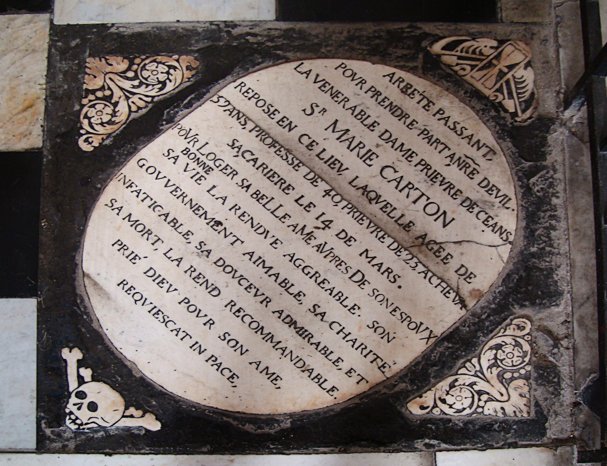

CityLoop Quest Lille


Lille se raconte aussi à travers des visages. Plusieurs femmes de pouvoir occupent une place majeure dans sa mémoire, à commencer par Jeanne et Marguerite de Flandre. Leur époque rappelle que la ville médiévale n’est pas seulement un ensemble de remparts et de marchés : c’est aussi un réseau d’hospices, de fondations religieuses, de décisions politiques et d’initiatives urbaines. L’Hospice Comtesse demeure l’un des lieux les plus évocateurs de cette histoire.

Vauban est un autre nom incontournable. Après la conquête de Lille par Louis XIV, l’ingénieur conçoit la citadelle, souvent surnommée la reine des citadelles. Son œuvre ne se limite pas à un plan militaire : elle modifie la manière dont la ville se défend, se dessine et se pense comme frontière. En approchant du bois de Boulogne ou des abords de la citadelle, on comprend que Lille fut longtemps un enjeu stratégique de première importance.

Charles de Gaulle donne à Lille une résonance nationale. Né rue Princesse en 1890, il reste associé à une famille, à une maison et à un milieu bourgeois catholique du Nord. La Maison natale Charles de Gaulle permet de replacer le futur chef de la France libre dans un décor intime : objets, pièces domestiques, atmosphère familiale. Pour Lille, ce n’est pas seulement une plaque commémorative, mais un lien direct avec l’histoire française du XXe siècle.

La ville a également inspiré et accueilli des artistes, des écrivains, des architectes, des entrepreneurs et des figures populaires. Les collections du Palais des Beaux-Arts, les façades de la Vieille Bourse, les théâtres, les librairies et les universités rappellent que Lille n’est pas réductible à ses grands hommes officiels. Elle a produit une culture collective, nourrie par le commerce, l’enseignement, la presse, les cafés et les sociabilités du Nord.
Dans votre parcours CLQ, amusez-vous à relier les lieux aux personnes. Une façade peut rappeler un mécène, une rue un industriel, un musée une donatrice, une place un pouvoir politique. Lille devient plus vivante lorsqu’on comprend qu’elle est faite de décisions, d’ambitions, de conflits et de gestes personnels. Derrière les briques et les pierres, il y a toujours quelqu’un qui a fondé, commandé, habité, résisté ou transmis.
Ces figures ne composent pas une galerie figée. Elles dessinent plutôt des manières différentes d’agir sur la ville : fonder, protéger, fortifier, gouverner, transmettre, créer. En observant l’Hospice Comtesse, la citadelle, la rue Princesse ou les collections du Palais des Beaux-Arts, on comprend que la mémoire lilloise n’est pas seulement dans les plaques et les dates. Elle se lit dans les lieux qui ont conservé l’empreinte de décisions humaines. Marguerite de Flandre rappelle la puissance des fondations médiévales, Vauban incarne la ville stratégique, Charles de Gaulle relie Lille à l’histoire nationale, et les artistes conservés au Palais des Beaux-Arts ouvrent la ville vers l’Europe des formes et des idées. Ces noms n’ont pas tous vécu Lille de la même manière : certains l’ont administrée, d’autres défendue, d’autres quittée avant d’y revenir par la mémoire. C’est précisément cette variété qui les rend utiles pour comprendre la ville. Un personnage n’est jamais seulement une biographie ; il devient une clé de lecture. Il aide à voir pourquoi un hospice a été fondé, pourquoi une citadelle a été dessinée, pourquoi une maison de famille peut devenir musée, ou pourquoi une collection publique construit une identité culturelle. En suivant ces traces, le visiteur rencontre moins des statues que des décisions qui ont modifié durablement l’espace urbain. Même les figures moins connues comptent dans cette lecture : artisans, industriels, enseignants, libraires, responsables associatifs, collectionneurs et habitants ordinaires ont chacun participé à la continuité urbaine. Lille ne s’explique pas seulement par quelques grands noms ; elle se comprend aussi par une foule de gestes modestes qui ont entretenu ses institutions, ses quartiers et ses habitudes.